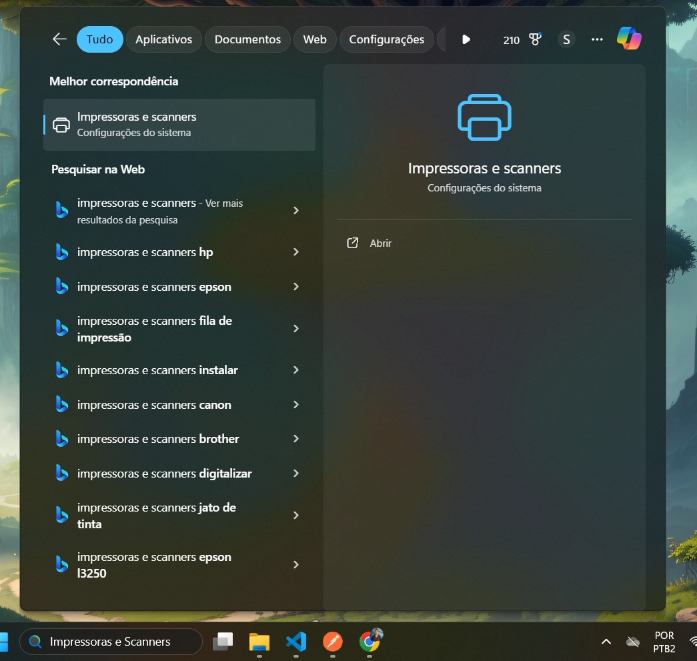
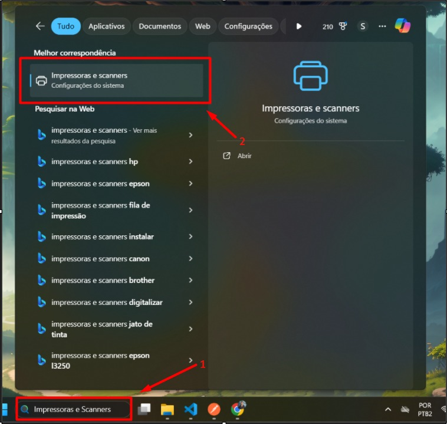
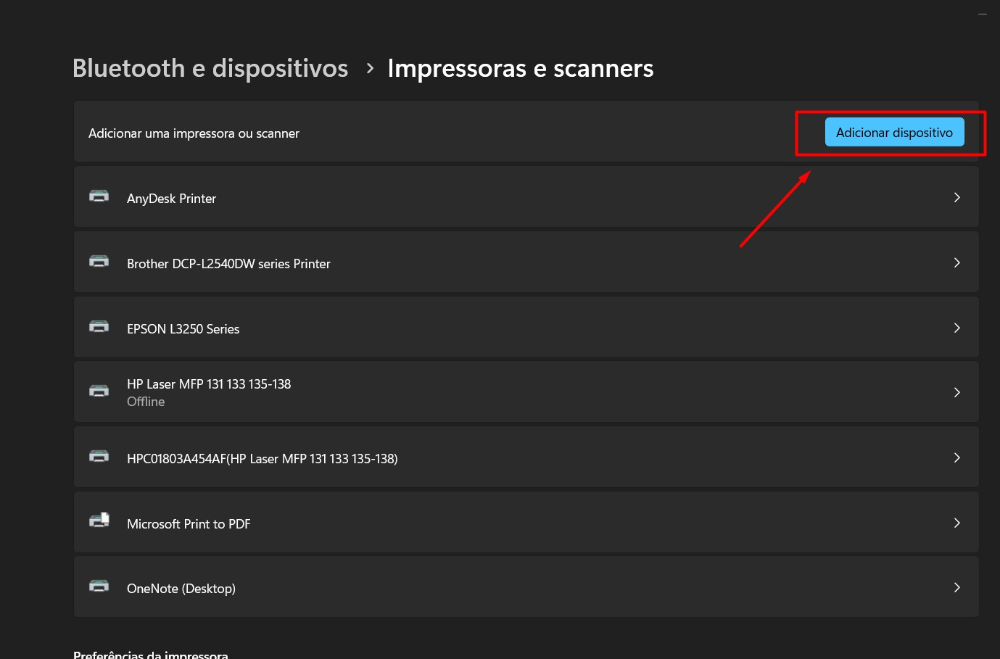
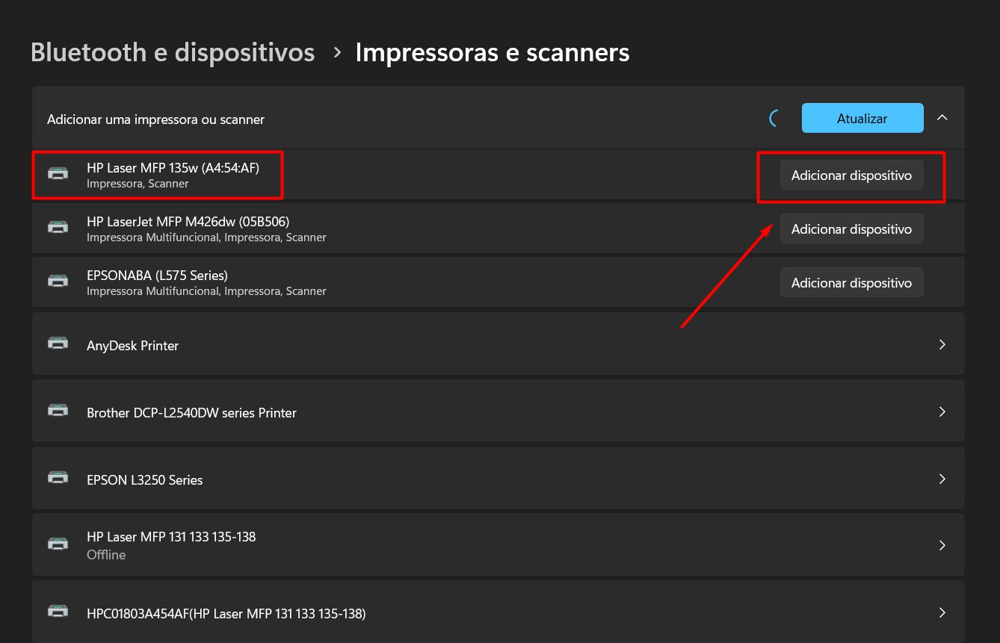

1- Pesquisar no menu iniciar
"Impressoras e Scanners"

2- Selecione: Impressoras e Scanners

3- Clique em: "Adicionar dispositivo"

4- Adicione a impressora clicando em "Adicionar dispositivo"
Modelo: HP Laserjet MFP135w
